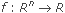
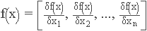

This content is taken from the Adv Math and Stats book as a test of Flare 7 equation editor functionality.
This section introduces some of the mathematical concepts used with IDL Advanced Math and Stats.
The unconstrained minimization problem can be stated as follows:
min f(x)
where  is continuous and has derivatives of all orders required by the algorithms. The functions for unconstrained minimization are grouped into three categories: univariate functions, multivariate functions, and nonlinear least-squares functions.
For the univariate functions, it is assumed that the function is unimodal within the specified interval. For discussion on unimodality, see Brent (1973).
A quasi-Newton method is used for the multivariate IMSL_FMINV function. The default is to use a finite-difference approximation of the gradient of f(x). Here, the gradient is defined to be the following vector:

When the exact gradient can be easily provided, the grad argument should be used.
The nonlinear least-squares function uses a modified Levenberg-Marquardt algorithm. The most common application of the function is the nonlinear data-fitting problem where the user is trying to fit the data with a nonlinear model.
These functions are designed to find only a local minimum point. However, a function may have many local minima. Try different initial points and intervals to obtain a better local solution.
Double-precision arithmetic is recommended for the functions when the user provides only the function values.